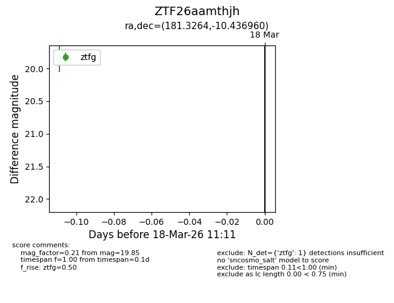
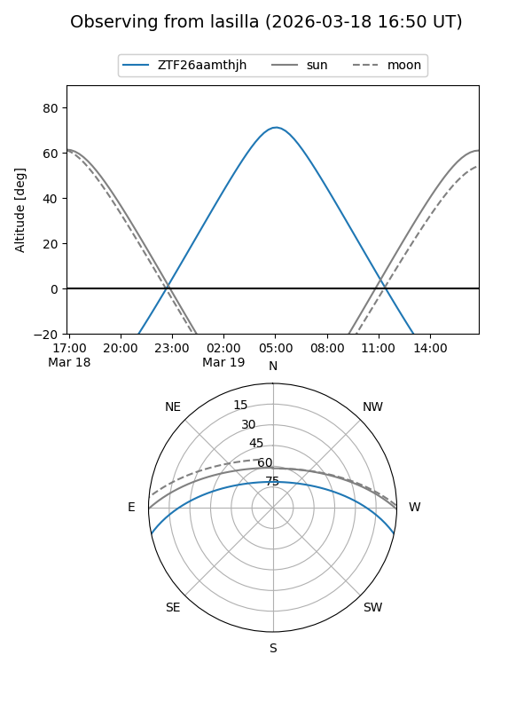
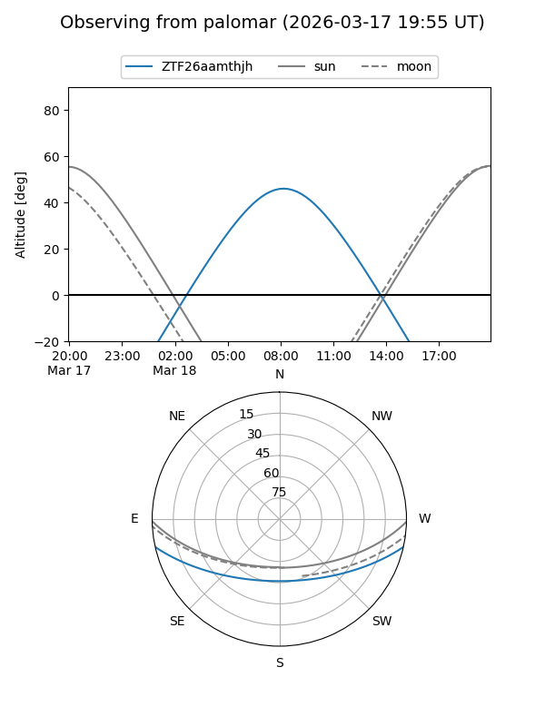

ZTF26aamthjh
Target ZTF26aamthjh at 2026-03-18 11:13
Aliases and brokers:
FINK: link
Lasair: link
ALeRCE: link
alt names
ZTF26aamthjh (ztf,fink_ztf)
Coordinates:
equatorial (ra, dec) = 181.3264,-10.43696
equatorial (HMS+DMS) = 12:05:18.33,-10:26:13.06
galactic (l, b) = (284.8047,+50.80393)
Flags:
Photometry:
last ztfg=19.85
1 ztfg detections
Lightcurve

Visibility


Additional plots